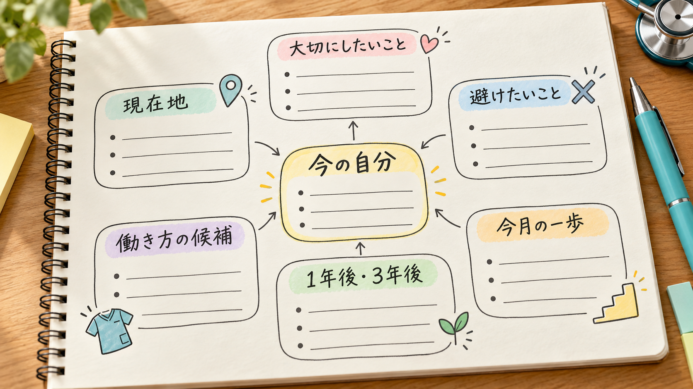

看護師として働いていても、「このまま病棟を続けるべきか」「資格を取るべきか」「病院の外にも目を向けるべきか」と迷うことがあります。忙しい毎日の中で、5年後や10年後の正解を決めようとすると、かえって動けなくなるかもしれません。
看護師を取り巻く環境も変わります。在宅医療や訪問看護の利用見込みは、人口の年齢構成だけでなく、病床機能の分化・連携や地域の医療提供体制によっても変わり、患者数のピークも地域ごとに異なります。AIやICTが記録、見守り、情報共有を支えるようになれば、同じ「看護師」という資格でも求められる力は変わっていくでしょう。
だからキャリアは、一つの進路を固定するのではなく、自分の人生と市場の変化を照らし合わせながら描き直すことが大切です。この記事では、現在地、人生の価値観、市場、選択肢を整理し、1年後・3年後の行動へつなげる方法を紹介します。
看護師のキャリアマップは、昇進や資格取得だけを並べる表ではありません。「どう生きたいか」を仕事の条件へ変換し、自分の経験と市場の変化を踏まえて、複数の道と次の一歩を見える形にする地図です。1年後は具体的に、3年後は仮置きし、5年後は選択肢を残しましょう。
看護師のキャリアマップとは
この記事でいうキャリアマップとは、自分の経験や得意なこと、理想の暮らし、看護師を取り巻く環境を整理し、「これからどんな働き方を選び、まず何をするか」を一枚の地図のようにまとめたものです。
| 用語 | 簡単にいうと |
|---|---|
| キャリアパス | 組織や職種の中で想定されている、役割や昇進の進み方 |
| キャリアプラン | 自分が望む将来の仕事や働き方へ向けて立てる計画 |
| キャリアラダー | 看護実践能力の成長段階を確認するための指標 |
| キャリアマップ | 今の自分から、選べる働き方と最初の一歩を整理した地図 |
ラダーを上がることだけがキャリアではありません。臨床で専門性を深める、職場を変える、教育や管理へ進む、病院外で経験を生かす、勤務負担を下げて長く働く。どれも本人の人生に合っていれば正当な選択です。
日本看護協会の「看護職の生涯学習ガイドライン」も、学びとキャリア形成を通じて望む生き方を実現するという考え方を示しています。仕事の肩書だけでなく、人生全体からキャリアを考えてよいのです。
まず、看護師としての現在地を整理する
最初から行き先を決める必要はありません。まず、今どこにいるのかを言葉にします。経験年数や診療科だけでなく、日々の仕事を細かく振り返ることがポイントです。
- 経験：診療科、施設、勤務形態
- 看護実践：処置、観察、急変対応、退院支援
- 対人・調整：患者・家族との関わり、多職種との調整
- 役割：教育、委員会、リーダー、管理の経験
- 向き・不向き：得意なことと、強い負担を感じること
- 感情：仕事でうれしかった場面と、繰り返したくない場面
- 生活条件：健康、収入、通勤、家庭など現在の制約
「病棟しか経験がない」で終わらせず、「限られた時間で優先順位をつけられる」「不安の強い家族へ説明できる」のように、別の職場でも使える力へ言い換えてみましょう。自分では当たり前になっている能力が、市場で評価されることもあります。
仕事の前に、どんな人生を送りたいかを考える
キャリアだけを考えていると、「年収を上げたい」「資格を取りたい」「管理職になりたい」という目標から始まりがちです。しかし、それが自分の望む生活につながるとは限りません。
運営者自身も、最初から仕事の方向性を明確にできていたわけではありません。健康、人間関係、時間、暮らし、お金など、人生で大切にしたいことを書き出すうちに、避けたい働き方や仕事に求める条件が少しずつ言葉になりました。
次の問いから、思いつくことを書いてみてください。
- 理想の生活のために、お金はいくら必要？
- どんな人と働き、どんな人から学びたい？
- 自由、安定、収入のうち何を優先したい？
- どこに住み、どんな生活をしたい？
- 家族や友人、パートナーとの関係はどうありたい？
- 健康を守るために、睡眠・運動・休息とどう向き合う？
人生の価値観マップは「どう生きたいか」を整理するもの。仕事のキャリアマップは「その人生を支えるためにどう働くか」を具体化するものです。別々に作ると考えやすくなりますが、仕事だけを独立させず、人生の価値観から条件を導きます。
人生の価値観を、仕事の条件へ変換する
抽象的な価値観を、求人票や職場見学で確認できる条件へ変えます。
| 人生で大切にしたいこと | 仕事に求める条件 | 避けたい状態 |
|---|---|---|
| 健康 | 睡眠と運動を確保できる勤務 | 夜勤や残業で回復できない |
| 大切な人との時間 | 休日を調整しやすい | 急な呼び出しが常態化 |
| 成長 | 学習機会と新しい役割がある | 業務が固定され変化がない |
| 自由 | 時間・場所・勤務日数に裁量がある | 働き方を選べない |
| 経済的な安心 | 必要収入を持続的に得られる | 夜勤手当や残業代だけに依存 |
条件は「絶対に守りたい」「できれば満たしたい」「今は優先しない」の3段階に分けます。すべてを最大化しようとすると選べなくなるため、今の自分にとって重要な3つを決めましょう。
自分の希望だけでなく、看護師の市場を読む
自分に合う仕事でも、求人がほとんどない、必要な経験が大きく変わる、地域で需要が異なることがあります。キャリアマップには、自分の内側だけでなく市場という外側の情報も必要です。
今、看護師は不足しているのか
厚生労働省の看護師等確保基本指針では、2025年の看護師等の需要は約180.2万人と推計され、2020年の就業者約173.4万人から増員が必要とされました。ただし、全国どこでも同じように不足しているわけではありません。都市部と地方、病院と訪問看護、同じ都道府県内の医療圏でも需給は異なります。
同指針では、病院・診療所の需要増は小幅である一方、訪問看護の需要は大きく増えると見込まれています。「看護師だから安泰」と考えるより、どの地域で、どの領域の、どんな役割が必要とされるかを見ることが大切です。
10年後はどうなる？
10年後の人数を正確に言い切ることはできません。厚生労働省は2026年、2040年に向けた新しい需給推計の検討を始めています。現時点で確認できるのは、次の大きな流れです。
- 支える人が減る：生産年齢人口の減少が加速し、医療・介護の担い手確保が重要な課題になる
- 高齢者の構成が変わる：65歳以上人口は2040年を超えるまで、85歳以上人口は2035年頃まで増加が続く見込み
- 入院：全国の入院患者数は2040年頃にピークが見込まれる
- 外来：全国では2025年頃がピークと見込まれ、すでに減少局面にある地域も多い
- 在宅・訪問看護：在宅患者数は全国では2040年以降に最も多くなり、訪問看護利用者数も多くの地域で2040年以降にピークを迎える見込み
一次資料：厚生労働省「医療と介護の一体的な改革」↗／厚生労働省「第4回 2040年に向けた看護職員の養成・確保の在り方に関する検討会」↗
つまり、病院の外来、急性期、在宅、介護が同じ動きをするわけではありません。大都市と過疎地域でも違います。訪問診療や訪問看護の需要が伸びても、すべての事業所で給与が上がるとは限らず、診療報酬、経営、人員配置、地域の求人状況に左右されます。
ここでいう市場価値は「高く売れる人」という意味ではありません。必要とされる場所で、安全に看護を提供し、患者・家族・多職種から信頼され、環境の変化に対応できる力です。採用されやすさだけでなく、自分が無理なく価値を発揮し続けられるかも含めて考えます。
AIやロボットに看護師の仕事を奪われる日は来る？
「絶対に奪われない」とも、「すぐになくなる」とも断定できません。ただ、現在の資料を見る限り、看護師という職業が丸ごと消えるより、仕事の一部が自動化され、看護師の役割が変わる可能性のほうが現実的です。
厚生労働省は、見守り、記録、医療従事者間の情報共有などでICTを活用し、看護業務の効率化と負担軽減を進めています。OECDの2025年分析でも、看護師は生成AIや高度なロボットによって能力を補完される可能性がある職種として整理されています。
| 技術で変わりやすい業務 | 人の関与が特に重要な業務 |
|---|---|
| 記録の下書き、情報検索、定型的な集計 | 患者の表情や生活背景を含むアセスメント |
| 見守りセンサー、転倒リスクの検知支援 | 予想外の変化に気づき、優先順位を決める |
| 勤務表、物品管理、情報共有の効率化 | 不安や迷いを抱える患者・家族との対話 |
| 教育資料や説明文のたたき台 | 価値観を踏まえた意思決定支援と倫理的判断 |
AIはもっともらしい誤りを出すことがあり、機微な医療情報の扱いにも注意が必要です。WHOは、医療でAIを使う際も人が医療上の判断を管理し、説明可能性、責任、安全性を確保する必要があるとしています。
これから価値が高まりやすいのは、AIと競争する人ではなく、AIの出力をうのみにせず、患者の状況へ合わせて確かめ、安全に使える人です。デジタルリテラシーに加え、観察、臨床判断、対話、調整、倫理、多職種連携の力が重要になります。
気になる働き方を、同じ項目で比べてみる
興味のある働き方が見つかっても、すぐに一つへ決める必要はありません。まずは「今の職場を続ける」「訪問看護へ進む」「別の診療科へ移る」など、気になる候補を2〜3個書き出します。
次に、それぞれの候補について同じ項目を調べます。比べる項目をそろえると、イメージや知名度だけではなく、今の自分に合うかどうかを考えやすくなります。
| 比べる項目 | 確認すること |
|---|---|
| 生活との相性 | 勤務時間、夜勤、オンコール、休日、通勤は希望に合うか |
| 生かせる経験 | これまでの看護経験や得意なことを、どこで使えるか |
| 必要な準備 | 足りない経験や知識は何か。資格は本当に必要か |
| 地域の求人 | 通える範囲に求人があり、希望する収入を得られるか |
| 心身の負担 | その勤務や責任を無理なく続けられそうか |
| 試す方法 | 見学、研修、人に話を聞くなど、転職前に確かめられるか |
| 戻れる道 | 合わなかった場合に、以前の領域や別の道へ移れるか |
すべての条件を満たす働き方を探す必要はありません。先ほど決めた「仕事で守りたい条件トップ3」を満たす候補から、詳しく調べたり、見学したりしてみましょう。資格も先に取るのではなく、目指す仕事に本当に必要だと分かってから検討します。
1年後は具体的に、3年後は仮置きする
5年後、10年後を細かく決めても、制度、技術、給与、家族、健康、興味は変わります。そこで、時間軸ごとに解像度を変えます。
| 時間軸 | 決めること | 例 |
|---|---|---|
| 今月 | 後戻りしやすい最初の一歩 | 現場の人に話を聞く、求人を5件見る |
| 1年後 | 具体的な状態と経験 | 在宅領域の仕事と必要能力を説明できる |
| 3年後 | 仮の方向性 | 臨床と教育を組み合わせて働く |
| 5年後 | 残したい選択肢 | 管理、教育、事業のどれにも進める状態 |
3年後までに「何になるか」だけでなく、「どんな一日を送りたいか」「どんな状態を避けたいか」も書きます。5年後は役職や勤務先を固定せず、持っていたい経験、能力、つながり、資金などを置く程度で十分です。
自分だけのキャリアマップを作ってみよう
紙やメモアプリへ、次の順番で書き出します。空欄があっても構いません。

- 人生で大切にしたいこと：健康、家族、時間、住む場所、お金、人間関係
- 現在地：経験、できること、得意なこと、制約
- 避けたい状態：続けたくない勤務、負担、職場環境
- 仕事で守りたい条件トップ3：絶対に外せないもの
- 市場の変化：地域、領域、求人、制度、AI・ICT
- 興味のある方向を3つ：最初から一つに絞らない
- 1年後の状態：具体的な経験や働き方
- 3年後の方向：現時点での仮説
- 5年後に残す選択肢：固定しすぎない
- 今月の行動：30分〜半日で始められること
- 見直す日：半年後または環境が変わったとき
訪問看護が合うか分からないなら、無理に結論を出す必要はありません。「現場の看護師にオンコールの実態を聞く」「近隣の求人を比べる」のように、空欄を次の調査課題へ変えれば、それも立派なキャリアマップです。
小さく行動し、定期的に描き直す
キャリアマップは、きれいに完成させることより、現実を確かめるために使うことが大切です。退職や高額な資格講座を最初の一歩にせず、次のような小さな行動から始めます。
- 興味のある領域で働く人へ話を聞く
- 職場見学やオンライン説明会へ参加する
- 求人票を複数見て、共通する条件を探す
- 上司へ異動や役割について相談する
- 短い研修や無料の公的資料で学ぶ
- 可能なら単発、応援、ボランティアで試す
- AI・ICTを安全に使う基礎を学ぶ
半年〜1年ごとに、興味、体力、生活条件、市場の変化を見直します。計画どおりに進まなかったことを失敗と決めつけず、実際に分かったことを次の地図へ反映させましょう。
なお、心身が限界に近いときは、将来設計より休養と相談を優先してください。疲れ切った状態で人生の大きな答えを出す必要はありません。
まとめ：将来を決め切るより、次の一歩を決める
看護師のキャリアは、病院内の昇進や資格取得だけではありません。人生の価値観を整理し、それを仕事の条件へ変換し、自分の現在地と市場の変化を重ねることで、自分に合う方向が見えやすくなります。
少子高齢化が進んでも、すべての地域・領域で同じように人手不足が続くとは限りません。AIやロボットも、看護師を一度に置き換えるのではなく、記録や見守りなどの業務を変え、人に求められる役割を変えていく可能性があります。
1年後は具体的に、3年後は仮置きし、5年後は選択肢を残す。今の地図が変わっても問題ありません。正解を当てるより、現在地を知り、今月できる小さな一歩を決めることから始めましょう。
参考資料・出典
- 厚生労働省：第1回 2040年に向けた看護職員の養成・確保の在り方に関する検討会
- 厚生労働省：看護を取り巻く現状について
- 厚生労働省：看護師等の確保を促進するための措置に関する基本的な指針
- 国立社会保障・人口問題研究所：日本の将来推計人口（令和5年推計）
- 日本看護協会：生涯学習支援
- OECD：Digital and AI skills in health occupations
- WHO：Ethics and governance of artificial intelligence for health
本記事は2026年10月15日時点で確認できる公的資料等をもとに作成しています。将来の人口、医療需要、看護職員需給は推計であり、地域、制度、技術、景気などによって変わります。特定の職場、資格、転職、独立による収入や採用を保証するものではありません。掲載写真はすべて生成イメージであり、実在する人物、医療機関、施設を表すものではありません。